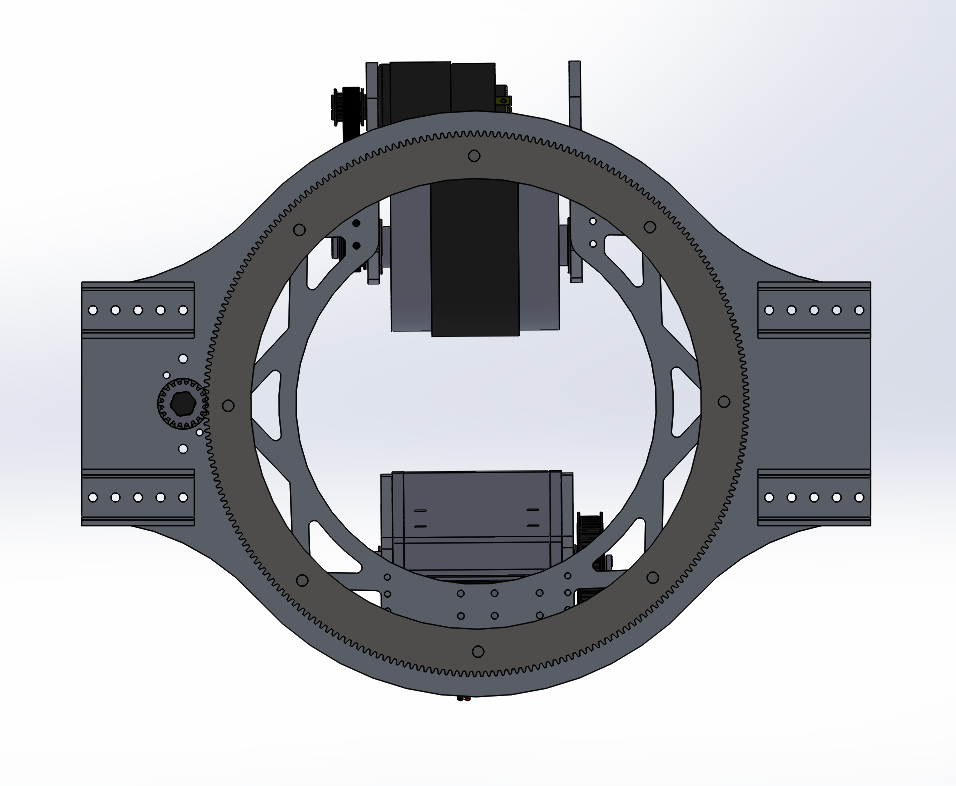

The 2020 season was centered around shooting a 7 inch foam ball into a goal, about the height of a basketball hoop. as most games go, the name of the game was speed, quickness. Two extra challanges come allong, climbing a 63 inch rung and a hieght restriction.
After 3 shooter prototypes and many iterations a single wheeled shooter was an obvious choice. Powered by 2 775 pro motors to decrease motor speed and increase torque we added a 2:1 gear ratio with GT2 pulleys. This effectivly decreased our 18,730rpm free speed to 9,365rpm and doubled our troque. Our empirical data showed that our speed time for the flywheel decreased, and recovery time per shot was minimal.

Shooti ng from any position is possible with the combination of a rotating turret, adjustible shot angle,and changing fly wheel speed. A large 240 tooth 20dp gear cut from 1/8inch 6061 alluminum on a water jet allowes 360 degree rotation. The gear has an ID of 10 inches allowing blls to pass through. With a total gear ratio of 250:1, 180 degree rotation takes a snappy .5 seconds. 24 bearings assisting the roation making this type of speed possible. Minimal torque is needed due to the rotational plane being coplanar with the ground. Inertial forces will be the largest contributing factor in slowing acceleration and decceleration.
An adjustible shot angle was key for optimizing shot placement. Close and long shots could come in at the apex of the shot arc. A bag motor drove all movments in the hood. The hood is a small section of a larger 20dp gear, but its treated more like a rack and pinion rather than a spur gear. Both the gear and the ball path are concentric with the fly wheel. This allows the balls to travel throughout the arc exiting at the desiered angle, with no change in exit ball compression(how tight the ball is held). For the powertrain, the goal was the heighest 2 stage gear ratio given the limited space. Utilizing both the larger pulleys that come with 1/2 hex and the smaller gears that come with 3/8 hex, we maximized the size differential. With a tight pressfit between both shafts, we achived a gear ratio of 106.07:1. The image shows the hood in the retracted state with a member hidden.